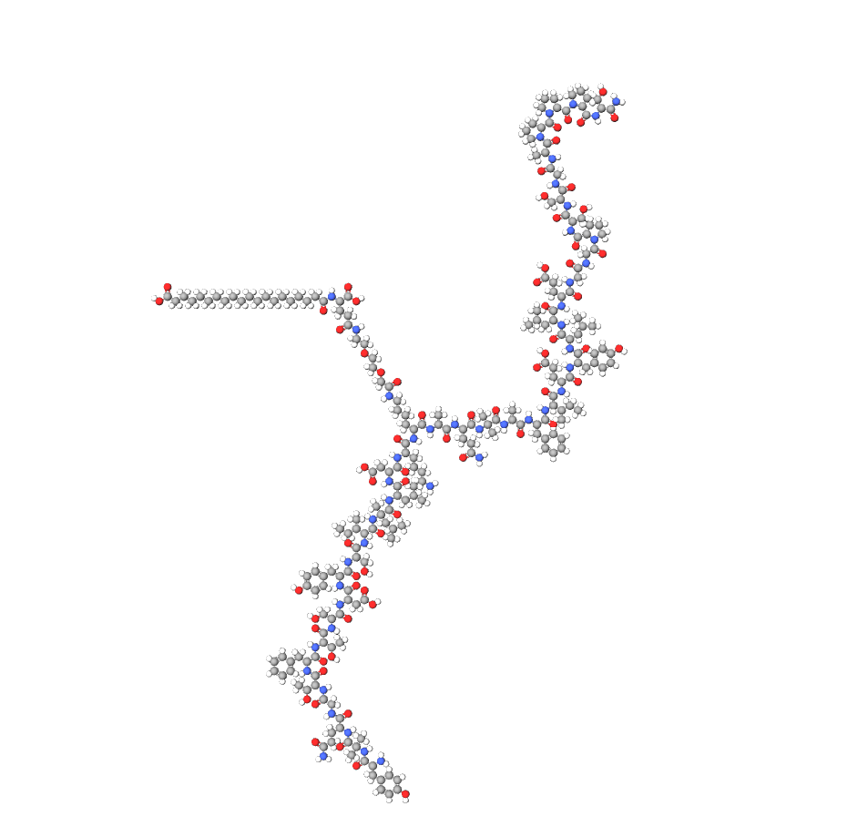

MOLECULAR COMPOSITION
C₂₂₁H₃₄₂N₄₆O₆₈
Retatrutide
Triple Receptor Agonist • DO NOT CONSUME • FOR RESEARCH PURPOSES ONLY
150 USD
SCIENTIFIC OVERVIEW
MECHANISM OF ACTION
Retatrutide (LY3437943) is a synthetic peptide that acts as a triple receptor agonist, targeting the glucagon receptor (GCGR), glucose-dependent insulinotropic peptide receptor (GIPR), and glucagon-like peptide-1 receptor (GLP-1R). Upon administration, Retatrutide binds to these receptors, initiating a cascade of intracellular signaling pathways. Specifically, activation of GCGR leads to increased cyclic AMP (cAMP) levels, enhancing hepatic glucose production and lipolysis. GIPR activation stimulates insulin secretion in a glucose-dependent manner, while GLP-1R activation promotes insulin release, inhibits glucagon secretion, and delays gastric emptying, collectively contributing to improved glucose homeostasis.
NEUROLOGICAL AND COGNITIVE PATHWAYS
- Modulates hypothalamic circuits involved in energy balance and appetite regulation
- Influences dopaminergic and serotonergic neurotransmission, affecting reward processing
- Potentially alters hippocampal plasticity, impacting learning and memory
- May interact with central pathways governing glucose metabolism and neuroendocrine function
RESEARCH APPLICATIONS
Retatrutide is under investigation for its potential therapeutic effects in obesity, type 2 diabetes, and metabolic-associated fatty liver disease (MAFLD). Preclinical studies have demonstrated its efficacy in reducing body weight, improving insulin sensitivity, and decreasing liver fat content. Ongoing clinical trials aim to further elucidate its safety profile and long-term benefits. For laboratory research only. Not for human consumption.
PHARMACOKINETICS
Half-life: Approximately 6 days
Peak plasma concentrations: Achieved within 48–72 hours post-administration
Bioavailability: Dose-proportional pharmacokinetics observed in clinical studies
Clearance: Primarily hepatic metabolism with minimal renal excretion
STORAGE & HANDLING
Store lyophilized powder at 2–8°C. Once reconstituted with bacteriostatic water, maintain at 2–8°C and use within 14 days. Protect from light and avoid freezing. Handle with appropriate laboratory safety equipment.
Limited availability • Verification required
This website is only a catalog. Request product for payment directions and contact info.